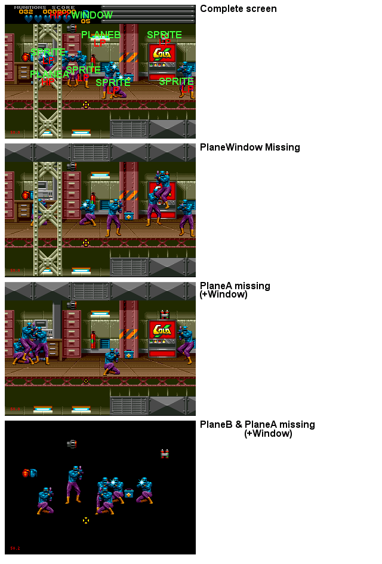

Pic 1 - And what about plane W?
BodyCount is a cool example because it uses all the availables planes. PlaneA is used in foreground (HP), PlaneB is used in background (LP), Sprites are in middle ground (LP) and the points/life are displayed on Window Plane (non scrollable plane).
Here both PlaneA & PlaneB are reloaded dynamicaly during scroll.
Just for the info : Planes size are 64*64 tiles (max size) and Shadow/Highlight is disactivated.
